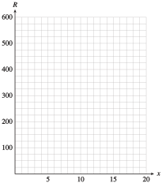

Section 6.4 Problem Solving
¶Many quadratic models arise as the product of two variables, one of which increases while the other decreases. For example, the area of a rectangle is the product of its length and its width, or \(A = lw\text{.}\) If we require that the rectangle have a certain perimeter, then as we increase its length, we must also decrease its width. (We analyzed this problem in Investigation 2.2 of Chapter 2.)
For Investigation 6.2, recall the formula for the revenue from sales of an item:
Usually, when the price of an item increases, the number of items sold decreases.
Investigation 6.2. Revenue from Theater Tickets.
The local theater group sold tickets to its opening night performance for \(\$5\) and drew an audience of \(100\) people. The next night, the group reduced the ticket price by \(\$0.25\) and \(10\) more people attended; that is, \(110\) people bought tickets at \(\$4.75\) apiece. In fact, for each \(\$0.25\) reduction in ticket price, \(10\) additional tickets can be sold.
-
Complete the table.
Number
of price
reductionsPrice of
ticketNumber
of tickets
soldTotal
revenue\(0\) \(5.00\) \(100\) \(500\) \(1\) \(4.75\) \(110\) \(522.50\) \(2\) \(\) \(\) \(\) \(3\) \(\) \(\) \(\) \(4\) \(\) \(\) \(\) \(5\) \(\) \(\) \(\) \(6\) \(\) \(\) \(\) \(7\) \(\) \(\) \(\) \(8\) \(\) \(\) \(\) \(9\) \(\) \(\) \(\) \(10\) \(\) \(\) \(\) \(11\) \(\) \(\) \(\) \(12\) \(\) \(\) \(\) -
Use your table to make a graph. Plot total revenue on the vertical axis versus number of price reductions on the horizontal axis.
 -
Let \(x\) represent the number of price reductions, as in the first column of the table. Write algebraic expressions in terms of \(x\) for each quantity.
The price of a ticket after \(x\) price reductions:
\begin{equation*} \text{Price}= \end{equation*}The number of tickets sold at that price:
\begin{equation*} \text{Number}= \end{equation*}The total revenue from ticket sales:
\begin{equation*} \text{Revenue}= \end{equation*} Enter your expressions for the price of a ticket, the number of tickets sold, and the total revenue into the calculator as \(Y_1\text{,}\) \(Y_2\text{,}\) and \(Y_3\text{.}\) Use the Table feature to verify that your algebraic expressions agree with your table from part (1).
Use your calculator to graph your expression for total revenue in terms of \(x\text{.}\) Use your table to choose appropriate window settings that show the high point of the graph and both xintercepts.
What is the maximum revenue possible from ticket sales? What price should the theater group charge for a ticket to generate that revenue? How many tickets will the group sell at that price?
Subsection Maximum or Minimum Values
Finding the maximum or minimum value for a variable expression is a common problem in many applications. For example, if you own a company that manufactures blue jeans, you might like to know how much to charge for your jeans in order to maximize your revenue.
As you increase the price of the jeans, your revenue may increase for a while. But if you charge too much for the jeans, consumers will not buy as many pairs, and your revenue may actually start to decrease. Is there some optimum price you should charge for a pair of jeans in order to achieve the greatest revenue?
Example 6.71.
Late Nite Blues finds that it can sell \(600 - 15x\) pairs of jeans per week if it charges \(x\) dollars per pair. (Notice that as the price increases, the number of pairs of jeans sold decreases.)
Write an equation for the revenue as a function of the price of a pair of jeans.
Graph the function.
How much should Late Nite Blues charge for a pair of jeans in order to maximize its revenue?
-
Using the formula for revenue stated above, we find
\begin{equation*} \begin{aligned}[t] \text{Revenue} \amp= (\text{price of one item})(\text{number of items sold})\\ R \amp = x(600 - 15x)\\ R \amp = 600x - 15x^2 \end{aligned} \end{equation*} -
We recognize the equation as quadratic, so the graph is a parabola. You can use your calculator to verify the graph below.

-
The maximum value of \(R\) occurs at the vertex of the parabola. Thus,
\begin{equation*} \begin{aligned}[t] x_v\amp=\frac{-b}{2a}=\frac{-600}{2(-15)}=20\\ y_v\amp=600(\alert{20}) - 15(\alert{20})^2 = 6000 \end{aligned} \end{equation*}The revenue takes on its maximum value when \(x = 20\text{,}\) and the maximum value is \(R = 6000\text{.}\) This means that Late Nite Blues should charge $\(20\) for a pair of jeans in order to maximize revenue at $\(6000\) a week.
Note 6.72.
If the equation relating two variables is quadratic, then the maximum or minimum value is easy to find: It is the value at the vertex. If the parabola opens downward, as in Example 6.71, there is a maximum value at the vertex. If the parabola opens upward, there is a minimum value at the vertex.
Notebook 6.73. QuickCheck 1.
Notebook 6.74. Practice 1.
Notebook 6.75. Pause and Reflect.
Subsection The Vertex Form for a Parabola
Notebook 6.76. QuickCheck 2.
Consider the quadratic equation
By expanding the squared expression and collecting like terms, we can rewrite the equation in standard form as
The vertex of this parabola is
and its graph is shown below.

Notice that the coordinates of the vertex, \((3,-8)\text{,}\) are apparent in the original equation; we don’t need to do any computation to find the vertex.
This equation is an example of the vertex form for a quadratic function.
Vertex Form for a Quadratic Function.
A quadratic function \(y = ax^2 + bx + c\text{,}\) \(a \ne 0\text{,}\) can be written in the vertex form
where the vertex of the graph is \((x_v, y_v)\text{.}\)
Example 6.77.
Find the vertex of the graph of \(y = -3(x - 4)^2 + 6\text{.}\) Is the vertex a maximum or a minimum point of the graph?
Compare the equation to the vertex form to see that the coordinates of the vertex are \((4, 6)\text{.}\) For this equation, \(a = -3 \lt 0\text{,}\) so the parabola opens downward. The vertex is the maximum point of the graph.
To understand why the vertex form works, substitute \(x_v = \alert{4}\) into \(y = -3(x - 4)^2 + 6\) from Example 6.77 to find
which confirms that when \(x = 4\text{,}\) \(y = 6\text{.}\) Next, notice that if \(x\) is any number except \(4\text{,}\) the expression \(-3(x - 4)^2\) is negative, so \(y \lt 6\text{.}\) Therefore, \(6\) is the maximum value for \(y\) on the graph, so \((4, 6)\) is the high point or vertex.
You can also rewrite \(y = -3(x - 4)^2 + 6\) in standard form and use the formula \(x_v = \dfrac{-b}{2a}\) to confirm that the vertex is the point \((4, 6)\text{.}\)
Notebook 6.78. Practice 2.
Notebook 6.79. QuickCheck 3.
Any quadratic equation in vertex form can be written in standard form by expanding, and any quadratic equation in standard form can be put into vertex form by completing the square.
Example 6.80.
Write the equation \(y = 3x^2 - 6x - 1\) in vertex form and find the vertex of its graph.
We factor the lead coefficient, \(3\text{,}\) from the variable terms, leaving a space to complete the square.
Next, we complete the square inside parentheses. Take half the coefficient of \(x\) and square the result:
We must add \(1\) to complete the square. However, we are really adding \(3(1)\) to the right side of the equation, so we must also subtract \(3\) to compensate:
The expression inside parentheses is now a perfect square, and the vertex form is
The vertex of the parabola is \((1,-4)\text{.}\)
Notebook 6.81. Practice 3.
Notebook 6.82. Pause and Reflect.
Subsection Graphing with the Vertex Form
We can also use the vertex form to sketch a graph, using what we know about transformations.
Example 6.83.
Use transformations to graph \(f(x) = -3(x - 4)^2 + 6\text{.}\)
We can graph \(f(x)\) by applying transformations to the basic parabola, \(y = x^2\text{.}\) To identify the transformations, think of evaluating the function for a specific value of \(x\text{.}\) What operations would we perform on \(x\text{,}\) besides squaring?
| 1. Subtract 4: | \(y = (x \, \alert{-\,4})^2\) | \(\blert{\text{Shift 4 units right.}}\) |
| 2. Multiply by -3: | \(y = \alert{-3}(x -4)^2\) | \(\blert{\text{Stretch by a factor of 3,}}\) \(\blert{\text{and reflect about the } x\text{-axis.}}\) |
| 3. Add 6: | \(y = -3(x - 4)^2 \,\alert{+\,6}\) | \(\blert{\text{Shift up 6 units.}}\) |
We perform the same transformations on the graph of \(y = x^2\text{,}\) as shown in the figure.

Notebook 6.84. Practice 4.

Subsection Systems Involving Quadratic Equations
Recall that the solution to a \(2 \times 2\) system of linear equations is the intersection point of the graphs of the equations. This is also true of systems in which one or both of the equations is quadratic. Such a system may have either one solution, two solutions, or no solutions. The figure below shows the three cases for systems of one quadratic and one linear equation. (See Algebra Review Refresher Section A.5.)

In Example 6.85, we use both graphical and algebraic techniques to solve the system.
Example 6.85.
The Pizza Connection calculates that the cost, in dollars, of producing \(x\) pizzas per day is given by
The Pizza Connection charges $\(15\) per pizza, so the revenue from selling \(x\) pizzas is
How many pizzas per day must the Pizza Connection sell in order to break even?
To break even means to make zero profit. Because
the break-even points occur when revenue equals cost. In mathematical terms, we would like to find any values of \(x\) for which \(R = C\text{.}\)
If we graph the revenue and cost functions on the same axes, these values correspond to points where the two graphs intersect. Use the window settings
on your calculator to obtain the graph shown below. You can verify that the two intersection points are \((15, 225)\) and \((80, 1200)\text{.}\)

Thus, the Pizza Connection must sell either \(15\) or \(80\) pizzas in order to break even. On the graph we see that revenue is greater than cost for \(x\)-values between \(15\) and \(80\text{,}\) so the Pizza Connection will make a profit if it sells between \(15\) and \(80\) pizzas.
We can also solve algebraically for the break-even points. The intersection points of the two graphs correspond to the solutions of the system of equations
We equate the two expressions for \(y\) and solve for \(x\text{:}\)
The solutions are \(15\) and \(80\text{,}\) as we found from the graph.
Notebook 6.86. Practice 5.

Notebook 6.87. Pause and Reflect.
Technology 6.88. Solving Systems with the Graphing Calculator.
We can use the intersect feature of the graphing calculator to solve systems of quadratic equations. Consider the system
We will graph these two equations in the standard window. The two intersection points are visible in the window, but we do not find their exact coordinates when we trace the graphs.
We can use the intersect command to locate one of the solutions, as shown below. You can check that the point \((0.9, 4)\) is an exact solution to the system by substituting \(x = 0.9\) and \(y = 4\) into each equation of the system. (The calculator is not always able to find the exact coordinates, but it usually gives a very good approximation.)

You can find the other solution of the system by following the same steps and moving the bug close to the other intersection point. You should verify that the other solution is the point \((-2.1, 1)\text{.}\)
Subsection Section Summary
¶Subsubsection Vocabulary
Look up the definitions of new terms in the Glossary.
Maximum value
Minimum value
Vertex form
Subsubsection CONCEPTS
Quadratic models may arise as the product of two variables.
The maximum or minimum of a quadratic function occurs at the vertex.
Vertex Form for a Quadratic Function.
A quadratic function \(y = ax^2 + bx + c\text{,}\) \(a \ne 0\text{,}\) can be written in the vertex form
\begin{equation*} y = a(x - x_v)^2 + y_v \end{equation*}where the vertex of the graph is \((x_v, y_v)\text{.}\)
We can convert a quadratic equation to vertex form by completing the square.
We can graph a quadratic equation in vertex form using transformations.
A \(2\times 2\) system involving quadratic equations may have one, two, or no solutions.
Subsubsection STUDY QUESTIONS
How can you tell whether a variable given by a quadratic equation has a maximum value or a minimum value?
What is wrong with this statement: The maximum or minimum value given by a quadratic equation is the average of the \(x\)-intercepts?
Explain why \(-4\) is the smallest function value for \(f (x) = 2(x - 3)^2 - 4\text{.}\)
In the equation \(y = \dfrac{1}{3}(x + 5)^2 - 2\text{,}\) what does each of the constants tell you about the graph?
Francine attempts to write the equation \(g(x) = 2x^2 - 6x + 1\) in vertex form as follows: \(g(x) = (2x^2 - 6x +\alert{9}) + 1 - \alert{9}\text{.}\) What is wrong with her work?
Without doing any calculations, solve the system \(y = x^2 + 4, y = 2 - 3x^2\text{.}\) (Hint: Visualize the graphs.)
Subsubsection SKILLS
Practice each skill in the Homework problems listed.
Find the maximum or minimum value of a quadratic function: #1–14
Convert a quadratic equation from vertex form to standard form: #19–22
Convert a quadratic equation from standard form to vertex form: #23–28
Use transformations to graph a quadratic equation: #15–28
USolve a system involving quadratic equations: #31–50
Exercises Homework 6.4
¶1.
The owner of a motel has \(60\) rooms to rent. She finds that if she charges $\(0\) per room per night, all the rooms will be rented. For every $\(2\) that she increases the price of a room, \(3\) rooms will stand vacant.
-
Complete the table. The first two rows are filled in for you.
No. of price
increasesPrice of
roomNo. of rooms
rentedTotal
revenue\(0\) \(20\) \(60\) \(1200\) \(1\) \(22\) \(57\) \(1254\) \(2\) \(\) \(\) \(\) \(3\) \(\) \(\) \(\) \(4\) \(\) \(\) \(\) \(5\) \(\) \(\) \(\) \(6\) \(\) \(\) \(\) \(7\) \(\) \(\) \(\) \(8\) \(\) \(\) \(\) \(10\) \(\) \(\) \(\) \(12\) \(\) \(\) \(\) \(16\) \(\) \(\) \(\) \(20\) \(\) \(\) \(\) Let \(x\) stand for the number of \(\$2\) price increases the owner makes. Write algebraic expressions for the price of a room, the number of rooms that will be rented, and the total revenue earned at that price.
Use your calculator to make a table of values for your algebraic expressions. Let \(Y_1\) stand for the price of a room, \(Y_2\) for the number of rooms rented, and \(Y_3\) for the total revenue. Verify the values you calculated in part (a).
Use your table to find a value of \(x\) that causes the total revenue to be zero.
Use your graphing calculator to graph your formula for total revenue.
What is the lowest price that the owner can charge for a room if she wants her revenue to exceed \(\$1296\) per night? What is the highest price she can charge to obtain this revenue?
What is the maximum revenue the owner can earn in one night? How much should she charge for a room to maximize her revenue? How many rooms will she rent at that price?
2.
The owner of a video store sells \(96\) blank tapes per week if he charges \(\$6\) per tape. For every \(\$0.50\) he increases the price, he sells \(4\) fewer tapes per week.
-
Complete the table. The first two rows are filled in for you.
No. of price
increasesPrice of
tapeNo. of tapes
soldTotal
revenue\(0\) \(6\) \(96\) \(576\) \(1\) \(6.50\) \(92\) \(598\) \(2\) \(\) \(\) \(\) \(3\) \(\) \(\) \(\) \(4\) \(\) \(\) \(\) \(5\) \(\) \(\) \(\) \(6\) \(\) \(\) \(\) \(7\) \(\) \(\) \(\) \(8\) \(\) \(\) \(\) \(12\) \(\) \(\) \(\) \(16\) \(\) \(\) \(\) \(20\) \(\) \(\) \(\) \(24\) \(\) \(\) \(\) Let \(x\) stand for the number of \(\$0.50\) price increases the owner makes. Write algebraic expressions for the price of a tape, the number of tapes sold, and the total revenue.
Use your calculator to make a table of values for your algebraic expressions. Let \(Y_1\) stand for the price of a tape, \(Y_2\) for the number of tapes sold, and \(Y_3\) for the total revenue. Verify the values you calculated in part (a).
Use your table to find a value of \(x\) that causes the total revenue to be zero.
Use your graphing calculator to graph your formula for total revenue.
How much should the owner charge for a tape in order to bring in \(\$ 630\) per week from tapes? (You should have two answers.)
What is the maximum revenue the owner can earn from tapes in one week? How much should he charge for a tape to maximize his revenue? How many tapes will he sell at that price?
3.
Give the dimensions of two different rectangles with perimeter \(60\) meters. Compute the areas of the two rectangles.
A rectangle has a perimeter of \(60\) meters. If the length of the rectangle is \(x\) meters, write an expression for its width.
Write an expression for the area of the rectangle.
4.
Give the dimensions of two different rectangles with perimeter \(48\) inches. Compute the areas of the two rectangles.
A rectangle has a perimeter of \(48\) inches. If the width of the rectangle is \(w\) inches, write an expression for its length.
Write an expression for the area of the rectangle.
For Problems 5–8,
Find the maximum or minimum value algebraically.
Obtain a good graph on your calculator and verify your answer. (Use the coordinates of the vertex and the vertical intercept to help you choose an appropriate window for the graph.)
5.
Delbert launches a toy water rocket from ground level. Its distance above the ground \(t\) seconds after launch is given, in feet, by
When will the rocket reach its greatest height, and what will that height be?
6.
Francine throws a wrench into the air from the bottom of a trench \(12\) feet deep. Its height \(t\) seconds later is given, in feet, by
When will the wrench reach its greatest height, and what will that height be?
7.
The owners of a small fruit orchard decide to produce gift baskets as a sideline. The cost per basket for producing \(x\) baskets is
How many baskets should they produce in order to minimize the cost per basket? What will their total cost be at that production level?
8.
A new electronics firm is considering marketing a line of telephones. The cost per phone for producing \(x\) telephones is
How many telephones should the firm produce in order to minimize the cost per phone? What will the firm's total cost be at that production level?
9.
As part of a collage for her art class, Sheila wants to enclose a rectangle with \(100\) inches of yarn.
Let \(w\) represent the width of the rectangle, and write an expression for its length. Then write an expression that gives the area, \(A\text{,}\) of the rectangle as a function of its width, \(w\text{.}\)
What is the area of the largest rectangle that Sheila can enclose with \(100\) inches of yarn?
10.
Gavin has rented space for a booth at the county fair. As part of his display, he wants to rope off a rectangular area with \(80\) yards of rope.
Let \(w\) represent the width of the roped-off rectangle, and write an expression for its length. Then write an expression that gives the area, \(A\text{,}\) of the roped-off space as a function of its width, \(w\text{.}\)
What is the largest area that Gavin can rope off? What will the dimensions of the rectangle be?
11.
A farmer plans to fence a rectangular grazing area along a river with 300 yards of fence as shown in the figure.

Write an expression that gives the area, \(A\text{,}\) of the grazing land as a function of the width, \(w\text{,}\) of the rectangle.
What is the largest area the farmer can enclose?
12.
A breeder of horses wants to fence two rectangular grazing areas along a river with \(600\) meters of fence as shown in the figure.

Write an expression that gives the area, \(A\text{,}\) of the grazing land as a function of the width, \(w\text{,}\) of the rectangles.
What is the largest area the breeder can enclose?
13.
A travel agent offers a group rate of \(\$2400\) per person for a week in London if \(16\) people sign up for the tour. For each additional person who signs up, the price per person is reduced by \(\$100\text{.}\)
Let \(x\) represent the number of additional people who sign up. Write expressions for the total number of people signed up, the price per person, and the total revenue.
How many people must sign up for the tour in order for the travel agent to maximize her revenue?
14.
An entrepreneur buys an apartment building with \(40\) units. The previous owner charged \(\$240\) per month for a single apartment and on the average rented \(32\) apartments at that price. The entrepreneur discovers that for every \(\$20\) he raises the price, another apartment stands vacant.
Let \(x\) represent the number of \(\$20\) price increases. Write expressions for the new price, the number of rented apartments, and the total revenue.
What price should the entrepreneur charge for an apartment in order to maximize his revenue?
15.
During a statistical survey, a public interest group obtains two estimates for the average monthly income of young adults aged 18 to 25. The first estimate is \(\$860\) and the second estimate is \(\$918\text{.}\) To refine its estimate, the group will take a weighted average of these two figures:
To get the best estimate, the group must choose \(a\) to minimize the function
(The numbers that appear in this expression reflect the variance of the data, which measures how closely the data cluster around the mean, or average.) Find the value of \(a\) that minimizes \(V\text{,}\) and use this value to get a refined estimate for the average income.
16.
The rate at which an antigen precipitates during an antigen-antibody reaction depends upon the amount of antigen present. For a fixed quantity of antibody, the time required for a particular antigen to precipitate is given in minutes by the function
where \(w\) is the quantity of antigen present, in grams. For what quantity of antigen will the reaction proceed most rapidly, and how long will the precipitation take?
For Problems 17-20, use transformations to graph the parabola. What is the vertex of each graph?
17.
\(y = (x - 3)^2\)
\(y=-(x-3)^2 \)
\(y=-(x-3)^2+4 \)
18.
\(y = (x +1)^2\)
\(y=2(x+1)^2 \)
\(y=2(x+1)^2-4 \)
19.
\(y = (x +4)^2\)
\(y=\dfrac{1}{2} (x+4)^2 \)
\(y=3+\dfrac{1}{2}(x+4)^2 \)
20.
\(y = (x -2)^2\)
\(y=-(x-2)^2 \)
\(y=-3-(x-2)^2 \)
In Problems 21–24,
Find the vertex of the parabola.
Use transformations to sketch the graph.
Write the equation in standard form.
21.
\(y = 2(x - 3)^2 + 4\)
22.
\(y = -3(x + 1)^2 - 2\)
23.
\(y =-\dfrac{1}{2}(x + 4)^2 - 3\)
24.
\(y = 4(x - 2)^2 - 6\)
For Problems 25–30,
Write each equation in the form \(y = a(x - p)^2 + q\) by completing the square.
Using horizontal and vertical translations, sketch the graph by hand.
25.
\(y = x^2 - 4x + 7\)
26.
\(y = x^2 - 2x - 1\)
27.
\(y =3x^2 + 6x - 2\)
28.
\(y =\dfrac{1}{2}x^2 + 2x + 5\)
29.
\(y = -2x^2 - 8x + 3\)
30.
\(y =-x^2 + 5x + 2\)
31.
A system of two quadratic equations may have no solution, one solution, or two solutions. Sketch a system illustrating each case. In your sketches, one of the parabolas should open up, and the other down.
32.
A system of two quadratic equations may have no solution, one solution, or two solutions. Sketch a system illustrating each case. In your sketches, both parabolas should open up.
For Problems 33–44, solve the system algebraically. Use your calculator to graph both equations and verify your solutions.
33.
\(\begin{aligned}[t] y \amp=x^2-4x+7 \\ y \amp=11-x \\ \end{aligned}\)
34.
\(\begin{aligned}[t] y \amp=x^2+6x+4 \\ y \amp=3x + 8 \\ \end{aligned}\)
35.
\(\begin{aligned}[t] y \amp=-x^2 - 2x + 7 \\ y \amp=2x + 11 \\ \end{aligned}\)
36.
\(\begin{aligned}[t] \amp y = x^2 - 8x + 17 \\ \amp y+4x =13 \\ \end{aligned}\)
37.
\(\begin{aligned}[t] \amp y = x^2 + 8x + 8 \\ \amp 3y + 2x = -36 \\ \end{aligned}\)
38.
\(\begin{aligned}[t] \amp y = -x^2 + 4x + 2 \\ \amp 4y - 3x = 24 \\ \end{aligned}\)
39.
\(\begin{aligned}[t] y \amp= x^2 - 9 \\ y \amp= -2x^2 + 9x + 21 \\ \end{aligned}\)
40.
\(\begin{aligned}[t] y \amp= 4-x^2 \\ y \amp= 3x^2 - 12x - 12 \\ \end{aligned}\)
41.
\(\begin{aligned}[t] y \amp= x^2 - 0.5x + 3.5 \\ y \amp= -x^2 + 3.5x + 1.5 \\ \end{aligned}\)
42.
\(\begin{aligned}[t] y \amp= x^2 + 10x + 22 \\ y \amp= -0.5x^2 - 8x - 32 \\ \end{aligned}\)
43.
\(\begin{aligned}[t] y \amp= x^2 - 4x + 4 \\ y \amp= x^2 - 8x + 16 \\ \end{aligned}\)
44.
\(\begin{aligned}[t] y \amp= 0.5x^2 + 3x + 5.5 \\ y \amp= 2x^2 + 12x + 4 \\ \end{aligned}\)
Problems 45–48 deal with wildlife management and sustainable yield.
45.
In Problem 9 of Section 6.3, you graphed the annual growth rate of a population of fish,
where \(x\) is the current biomass of the population, in tons.
Suppose that fishermen harvest \(300\) tons of fish each year. Sketch the graph of \(H = 300\) on the same axes with your graph of \(y\text{.}\)
If the biomass is currently \(2500\) tons and \(300\) tons are harvested, will the population be larger or smaller next year? By how much? What if the biomass is currently \(3500\) tons?
What sizes of biomass will remain stable from year to year if \(300\) tons are harvested annually?
If the biomass ever falls below \(1000\) tons, what will happen after several years of harvesting \(300\) tons annually?
46.
In Problem 10 of Section 6.3, you graphed the annual increase, \(I\text{,}\) in the deer population in a national park,
where \(x\) is the current population.
Suppose hunters are allowed to kill \(1000\) deer per year. Sketch the graph of \(H = 1000\) on the same axes with a graph of \(y\text{.}\)
What sizes of deer populations will remain stable from year to year if \(1000\) deer are hunted annually?
Suppose \(1600\) deer are killed annually. What sizes of deer populations will remain stable?
What is the largest annual harvest that still allows for a stable population? (This harvest is called the maximum sustainable yield.) What is the stable population?
What eventually happens if the population falls below the stable value but hunting continues at the maximum sustainable yield?
47.
The annual increase, \(N\text{,}\) in a bear population of size \(x\) is given by
if the bears are not hunted. The number of bears killed each year by hunters is related to the bear population by the equation \(K = 0.2x\text{.}\) (Notice that in this model, hunting is adjusted to the size of the bear population.)
Sketch the graphs of \(N\) and \(K\) on the same axes.
When the bear population is \(1200\text{,}\) which is greater, \(N\) or \(K\text{?}\) Will the population increase or decrease in the next year? By how many bears?
When the bear population is \(900\text{,}\) will the population increase or decrease in the next year? By how many bears?
What sizes of bear population will remain stable after hunting?
What sizes of bear populations will increase despite hunting? What sizes of populations will decrease?
Toward what size will the population tend over time?
Suppose hunting limits are raised so that \(K = 0.3x\text{.}\) Toward what size will the population tend over time?
48.
The annual increase in the biomass of a whale population is given in tons by
where \(x\) is the current population, also in tons.
Sketch a graph of \(w\) for \(0\le x\le 1100\text{.}\) What size biomass remains stable?
Each year hunters are allowed to harvest a biomass given by \(H = 0.6x\text{.}\) Sketch \(H\) on the same graph with \(w\text{.}\) What is the stable biomass with hunting?
What sizes of populations will increase despite hunting? What sizes will decrease?
What size will the population approach over time? What biomass are hunters allowed to harvest for that size population?
Find a value of \(k\) so that the graph of \(H = kx\) will pass through the vertex of \(w = 0.001x(1000 - x)\text{.}\)
For the value of \(k\) found in part (e), what size will the population approach over time? What biomass are hunters allowed to harvest for that size population?
Explain why the whaling industry should prefer hunting quotas of \(kx\) rather than \(0.6x\) for a long-term strategy, even though \(0.6x \gt kx\) for any positive value of \(x\text{.}\)
For Problems 49–52,
Find the break-even points by solving a system of equations.
Graph the equations for Revenue and Cost in the same window and verify your solutions on the graph.
-
Use the fact that
\begin{equation*} \text{Profit} = \text{Revenue} - \text{Cost} \end{equation*}to find the value of \(x\) for which profit is maximum.
49.
Writewell, Inc. makes fountain pens. It costs Writewell
dollars to manufacture \(x\) pens, and the company receives \(R = 13x\) dollars in revenue from the sale of the pens.
50.
It costs The Sweetshop
dollars to produce \(x\) pounds of chocolate creams. The company brings in \(R = 12x\) dollars revenue from the sale of the chocolates.
51.
It costs an appliance manufacturer
dollars to produce \(x\) front-loading washing machines, which will then bring in revenues of \(R = 650x\) dollars.
52.
A company can produce \(x\) lawn mowers for a cost of
dollars. The sale of the lawn mowers will generate \(R = 300x\) dollars in revenue.
Problems 53 and 54 prove that the vertical line \(x =\dfrac{-b}{2a}\) is the axis of symmetry of the graph of \(f(x) = ax^2 + bx + c\text{.}\) A graph is symmetric about the line \(x = h\) if the point \((h + d, v)\) lies on the graph whenever the point \((h - d, v)\) lies on the graph.
53.
Sketch a parabola \(f(x) = a(x - h)^2 + k\) and the line \(x = h\text{.}\) We will show that the parabola is symmetric about the line \(x = h\text{.}\)
Label a point on the parabola with \(x\)-coordinate \(x = h + d\text{,}\) where \(d\gt 0\text{.}\) What is the \(y\)-coordinate of that point?
Label the point on the parabola with \(x\)-coordinate \(x = h - d\text{.}\) What is the \(y\)-coordinate of that point?
Explain why your answers to parts (b) and (c) prove that the line \(x = h\) is the axis of symmetry for the graph of \(f(x) = a(x - h)^2 + k\text{.}\)
54.
To find the axis of symmetry for the graph of \(g(x) = ax^2 + bx + c\text{,}\) we will use the results of Problem 51 and the technique of completing the square.
Write the equation \(y = ax^2 + bx + c\) in vertex form by completing the square. (Follow the steps in Example 6.80.)
Your answer to part (a) has the form \(y = a(x - h)^2 + k\text{.}\) What is your value of \(h\text{?}\) What is your value of \(k\text{?}\)
What is the axis of symmetry for the parabola \(g(x) = ax^2 + bx + c\text{?}\)